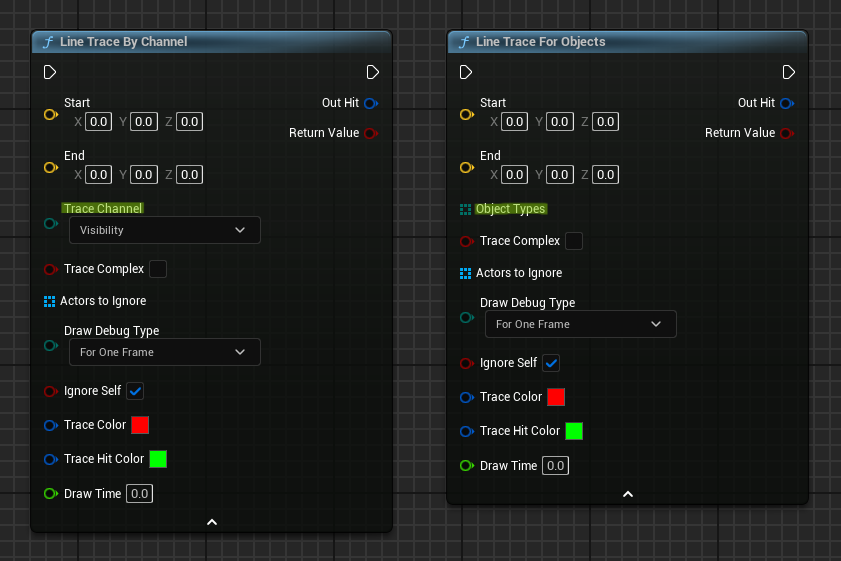

Trace 판정 실험판
Trace는 모양, 필터 방식, 반환 방식의 조합입니다. 아래 실험판에서 Line/Sphere, Single/Multi, Channel/Object 방식을 바꾸면 어떤 객체가 결과 배열에 들어오는지 바로 볼 수 있습니다.
Line + Single + Channel 기준으로 Enemy가 첫 Blocking Hit입니다.
Trace의 세 축
Trace 노드는 보통 모양, 필터 방식, 반환 방식의 조합으로 이해하면 됩니다.
예를 들어 Line Trace by Channel은 선 모양, 채널 필터, 싱글 반환을 사용하는 질의입니다.
모양
Line, Sphere, Box, Capsule처럼 검사할 형태입니다.
필터
Trace Channel, Object Type, Collision Profile 중 무엇으로 대상을 고를지 정합니다.
반환
처음 막힌 결과만 받을지, 경로상 여러 결과를 받을지 정합니다.
시각화 요약: Trace 질의가 결과로 바뀌는 과정

Channel과 Object Type
Channel Trace는 "이 Trace Channel을 Block/Overlap/Ignore 하는가"를 보고, Object Trace는 "대상의 Object Type이 요청한 배열에 포함되는가"를 봅니다. 따라서 같은 Line Trace라도 By Channel과 For Objects는 실패 원인이 다릅니다.
| 구분 | 질문 | 대표 사용 |
|---|---|---|
| Trace Channel | 대상이 이 채널을 Block 또는 Overlap 하는가? | Visibility, Camera, WeaponTrace 같은 질의 채널 |
| Object Type | 대상의 Object Type이 내가 찾는 목록에 포함되는가? | Pawn만 찾기, WorldDynamic만 찾기, PhysicsBody만 찾기 |
| Profile | 미리 정의된 Collision Profile 기준으로 검사할 것인가? | 프로젝트 규칙을 이름으로 재사용해야 할 때 |

Collision Enabled
Trace는 물리 시뮬레이션이 아니라 Query입니다.
물리 충돌은 필요 없고 Trace만 필요하면 Query Only가 적합하며, 물리만 필요하고 Trace에 잡히면 안 되면 Physics Only를 검토합니다.
Single과 Multi
Single Trace는 조건에 맞는 첫 Blocking Hit를 반환합니다. Multi Trace는 경로상 여러 결과를 반환하지만, Channel 기반 Multi Trace는 첫 Blocking Hit까지의 Overlap을 포함하고 그 Blocking Hit가 마지막에 옵니다.
| 노드 성격 | 반환 기준 | 주의점 |
|---|---|---|
| Single by Channel | 해당 Channel을 Block하는 첫 결과 | Overlap만 있는 대상은 목적에 따라 결과가 다르게 느껴질 수 있습니다. |
| Multi by Channel | 첫 Blocking Hit까지의 결과 | Blocking Hit 뒤에 있는 객체는 반환하지 않습니다. |
| Single for Objects | Object Type 배열에 포함되는 첫 결과 | 대상의 Object Type이 맞지 않으면 Response가 맞아도 잡히지 않습니다. |
| Multi for Objects | 지정 Object Type에 해당하는 여러 결과 | 반환 배열은 시작점에서 끝점 방향으로 정렬된다고 보는 편이 좋습니다. |
FHitResult 읽기
Trace가 무언가를 감지하면 FHitResult를 반환합니다.
5.7 API 기준으로 FHitResult는 Trace 한 번의 충돌 정보, 예를 들어 Impact 지점과 표면 Normal을 담는 구조체입니다.
| 멤버 | 의미 |
|---|---|
bBlockingHit |
Blocking Collision 결과인지 여부입니다. |
bStartPenetrating |
Trace가 시작 시점부터 이미 겹침 또는 침투 상태였는지 나타냅니다. |
Time |
TraceStart에서 TraceEnd까지의 진행 비율입니다. 일반적으로 0.0부터 1.0 범위입니다. |
Distance |
TraceStart에서 Location까지의 월드 거리입니다. |
Location |
Trace 모양을 고려한 히트 위치입니다. Sweep에서는 Impact Point와 다를 수 있습니다. |
ImpactPoint |
실제 표면에 닿은 지점입니다. |
Normal |
Sweep된 객체 기준의 월드 노멀입니다. Line Trace에서는 Impact Normal과 같은 경우가 많습니다. |
ImpactNormal |
맞은 표면의 월드 노멀입니다. |
GetActor() / GetComponent() |
히트된 컴포넌트와 그 소유 Actor를 얻는 유틸리티 함수입니다. |
원본 내용의 교정
원본 표의 Normal 설명은 "트레이스 방향"에 가깝게 적혀 있었지만, 공식 API 기준으로는 히트의 월드 노멀입니다.
표면 방향이 필요할 때는 ImpactNormal을 우선 확인하고, Sweep 결과에서는 Location과 ImpactPoint 차이를 구분합니다.
Shape Trace와 UV
Line Trace가 얇은 광선이라면 Shape Trace는 부피를 가진 모양을 Start에서 End까지 Sweep합니다. 근접 공격 판정, 캐릭터 발밑 검사, 넓은 상호작용 범위처럼 선 하나로 부족한 경우 Sphere, Capsule, Box Trace를 사용합니다.

UV 좌표 얻기
Hit Result에서 UV를 얻으려면 Project Settings의 Physics 섹션에서 Support UV From Hit Result를 활성화하고 에디터를 재시작합니다.
보통 복잡 충돌이나 메시 면 정보가 필요한 작업이므로, 성능과 충돌 설정을 함께 확인해야 합니다.
복습 질문
Channel Trace는 대상이 특정 Trace Channel에 어떻게 응답하는지 보고, Object Trace는 대상의 Object Type이 요청 목록에 포함되는지 봅니다.
첫 Blocking Hit가 Trace를 막는 지점이므로, 그 뒤의 결과는 해당 Trace의 유효 경로 밖으로 취급됩니다.
ImpactPoint와 Location이 달라질 수 있는 대표 상황은?
Sphere, Capsule, Box처럼 부피를 가진 Sweep Trace에서 모양의 중심 위치와 실제 표면 접촉점이 다를 수 있습니다.